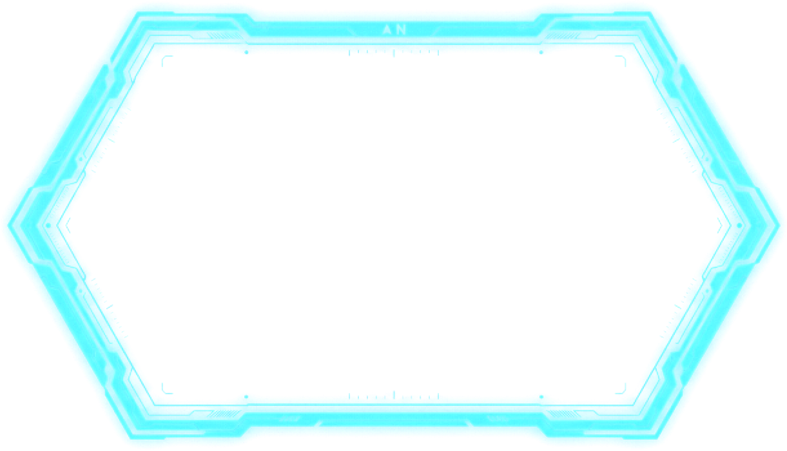

The overlay uses your CrashLands player account: sign in once in your browser and it remembers you.
Waiting for you to sign in in your browser…
Players in game, nearest first. Everything here goes through the admin panel with your own permissions, and is logged under your name.
To move the HUD, minimap or voice box, use Edit layout at the top.
Voice activation: the overlay sends your voice once it's louder than the green line. Push to talk: only while you hold the key (a letter, F1-F24, Mouse4, Mouse5, CapsLock...). Press the mute key to mute or unmute.
Keys: F1–F12, Insert, Home, PageUp... or combinations like Alt+M.